Unveiling the Power of R Shiny Dashboards
ABOUT ME
I am Jehangeer, a recent statistics graduate from Quaid-e-Azam University.
I offer my services as a professional R & Shiny freelancer on the Upwork platform.
Contact me: www.linkedin.com/in/aswanijehangeer/
AGENDA
We will talk in this presentation about:
- What is Shiny?
- What You Need to Get Started.
- Structure/Anatomy of Shiny and Hello Shiny App.
- Shiny Inputs & Outputs.
- Understanding Reactivity and Reactive Values.
- Sharing Apps - Deployment.
- What’s Next - (Shiny Learning Resources).
- Ask questions in the chat throughout!
TALK RESOURCES
You can find all the material we’ll use for this presentation in this GitHub repository.
GitHub: github.com/aswanijehangeer/Unveiling-the-Power-of-RShiny-Dashboards
WHAT IS SHINY?
Shiny is an R package that makes it easy to build interactive web applications (apps) straight from R.
It allows users to convert R code into web applications without needing expertise in web development languages like HTML, CSS, or JavaScript.

WHAT YOU NEED TO GET STARTED IN SHINY?
You just need R and RStudio (IDE) to get started in Shiny.
R is a free, open-source programming language that is used for data mining, statistical analysis, data visualization, and machine learning.
Download R here: cran.r-project.org/
RStudio is a free, open-source, integrated development environment (IDE) for the R programming language.
Download RStudio here: posit.co/download/rstudio-desktop/
RSTUDIO INTERFACE
This is how your rstudio interface should look like after complete installation.

STRUCTURE OF A SHINY APP
Shiny apps can be developed in a single script named app.R.
app.R has three components:
- a user interface (UI) object.
- a server function.
- a call to the
shinyAppfunction.
The ui object shapes the app’s look and feel, while the server function holds the app’s instructions for execution. The shinyApp function combines the UI and server logic to create the Shiny app object.
STRUCTURE OF A SHINY APP CONT…
However, for larger applications, splitting the code into two separate files, namely ui.R and server.R, is a good option.
This separation allows for better organization and management of the user interface (UI) elements in ui.R and the server-side logic in server.R.
ANATOMY OF A SHINY APP
Here is a code template for an empty app.
LET’S BUILD A SIMPLE HELLO SHINY APP
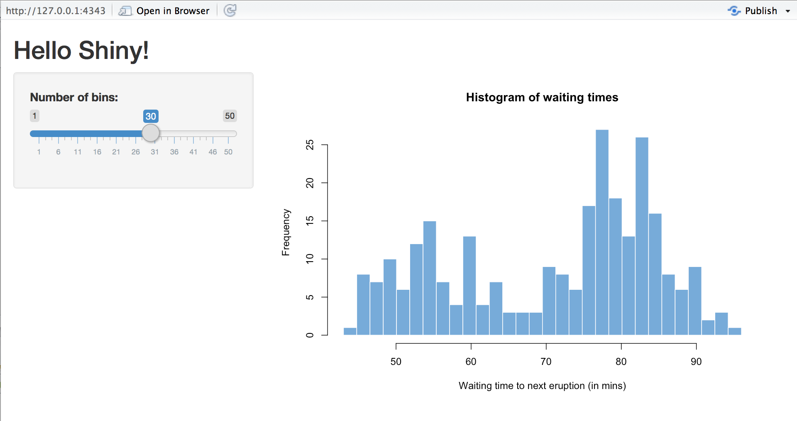SIMPLE HELLO SHINY APP - USER INTERFACE
Here is the ui object for the Hello Shiny App.
library(shiny)
# Define UI for app that draws a histogram ----
ui <- fluidPage(
# App title ----
titlePanel("Hello Shiny!"),
# Sidebar layout with input and output definitions ----
sidebarLayout(
# Sidebar panel for inputs ----
sidebarPanel(
# Input: Slider for the number of bins ----
sliderInput(inputId = "bins",
label = "Number of bins:",
min = 1,
max = 50,
value = 30)
),
# Main panel for displaying outputs ----
mainPanel(
# Output: Histogram ----
plotOutput(outputId = "distPlot")
)
)
)SIMPLE HELLO SHINY APP - SERVER
Here is the server function for the Hello Shiny App.
# Define server logic required to draw a histogram ----
server <- function(input, output) {
# Histogram of the Old Faithful Geyser Data ----
# with requested number of bins.
# This expression that generates a histogram is wrapped in a call
# to renderPlot to indicate that:
#
# 1. It is "reactive" and therefore should be automatically
# re-executed when inputs (input$bins) change.
# 2. Its output type is a plot.
output$distPlot <- renderPlot({
x <- faithful$waiting
bins <- seq(min(x), max(x), length.out = input$bins + 1)
hist(x, breaks = bins, col = "#007bc2", border = "white",
xlab = "Waiting time to next eruption (in mins)",
main = "Histogram of waiting times")
})
}RUNNING AN APP
Every Shiny app has the same structure: an app.R file that contains ui and server. You can create a Shiny app by making a new directory and saving an app.R file inside it.
Optional caption (note)
It is recommended that each app will live in its own unique directory.
You can run a Shiny app by giving the name of its directory to the function runApp.
For example if your Shiny app is in a directory called my_app, run it with the following code:
RELAUNCHING AN APP
To relaunch your Shiny app:
Run runApp(“myapp”), or
Open the app.R script in your RStudio editor. RStudio will recognize the Shiny script and provide a Run App button (at the top of the editor).
THERE ARE MORE THAN 20 INPUTS IN SHINY
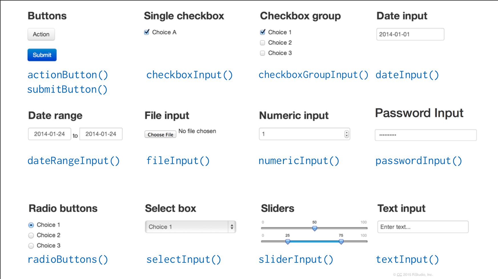SHINY INPUT SYNTAX
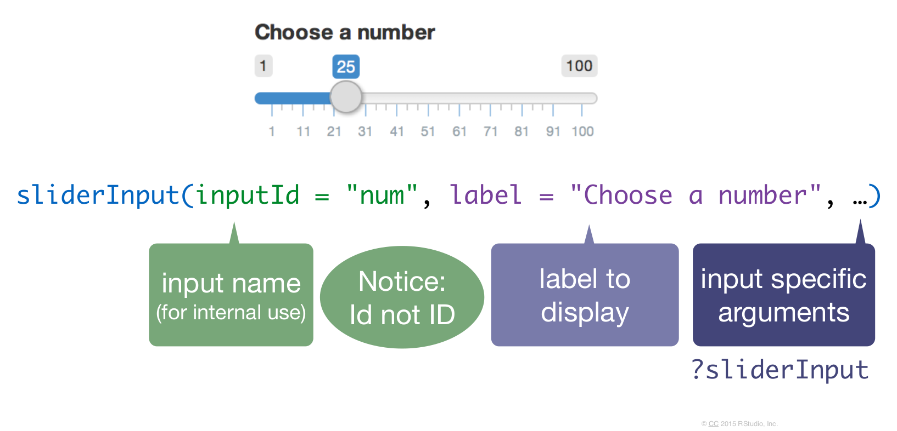SHINY INPUT - EXAMPLE
SHINY OUTPUTS
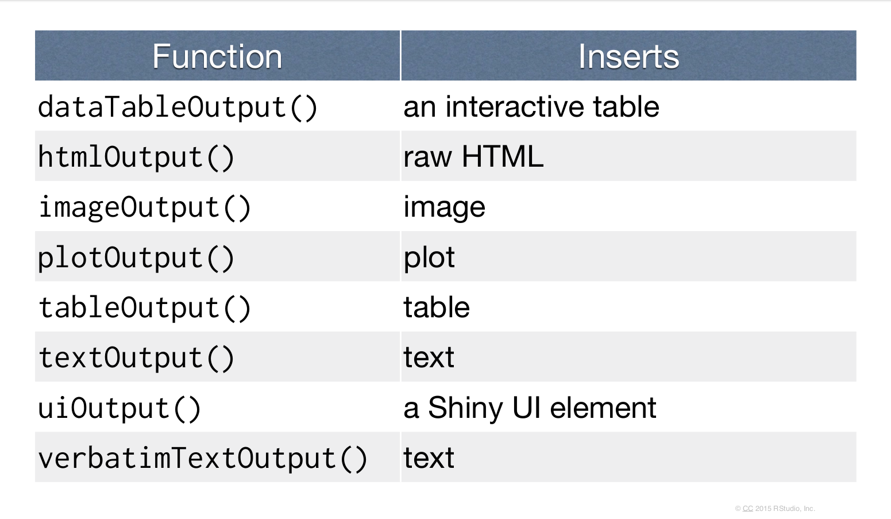SHINY OUTPUT SYNTAX
To display output, add it to fluidPage() with an *Output() function.
SHINY OUTPUT - EXAMPLE
QUICK RECAP - WHAT WE HAVE LEARN
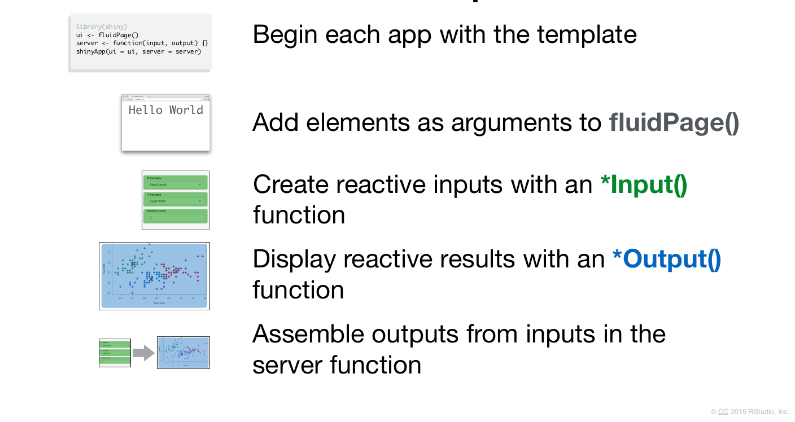SERVER: HOW TO ASSESMBE INPUTS INTO OUTPUTS?
To write a server function, there are three basic rules. If you follow the three rules, the output will automatically update.
1. Save objects to display to output$.
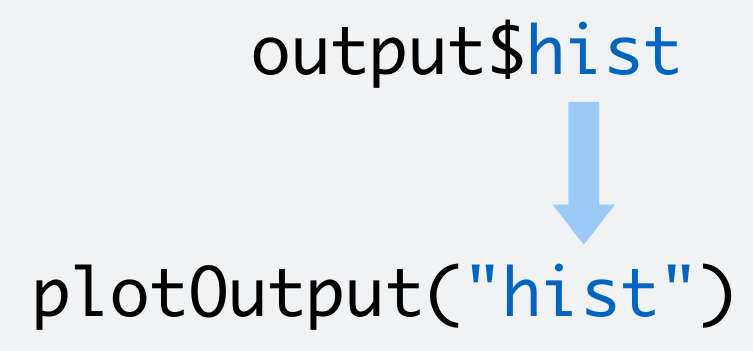2. Build objects to display with render*()
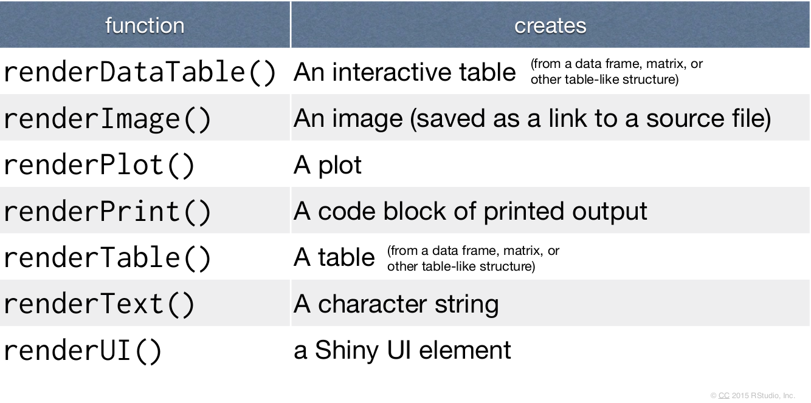3. Access input values with input$
The input value changes whenever a user changes the input.
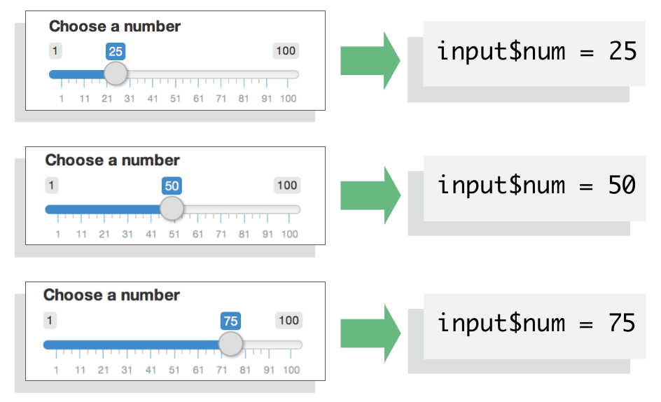QUICK RECAP: RENDERS
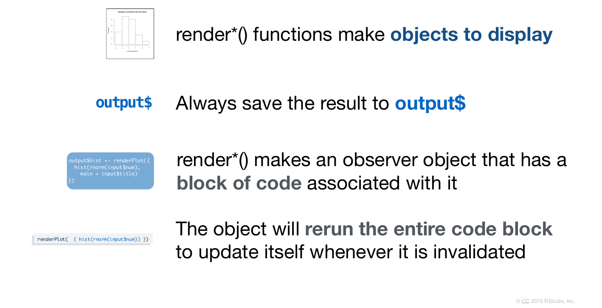QUICK RECAP: SERVER
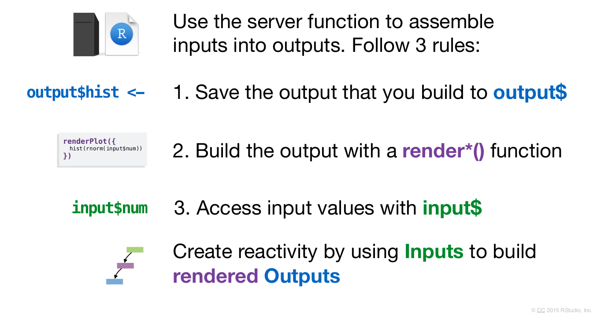WHAT IS REACTIVITY?
Reactivity in shiny refers to the automatic updating of outputs based on changes in inputs or data.
Reactivity automatically occurs whenever we use an input value to render an output object.
WHAT IS A REACTIVE VALUE?
A reactive value is an object that causes reactive functions to re-execute when their value changes.
For example, user inputs to a Shiny application are reactive value objects.
REACTIVE VALUES CONT…
Reactive values work together with reactive functions. We cannot call a reactive value from outside of one.
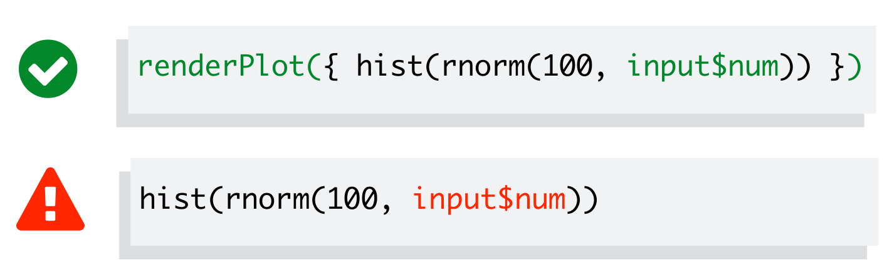QUICK RECAP: REACTIVE VALUES
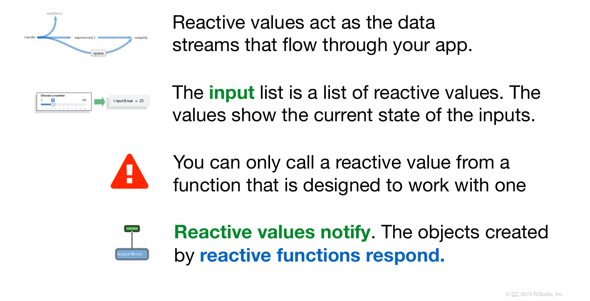SHARE YOUR APPS
When it comes to sharing Shiny apps, we have two basic options:
Share your Shiny app as R script. This is the simplest way to share an app, but it works only if your users have R on their own computer (and know how to use it).
Share your Shiny app as a web page. This is definitely the most user friendly way to share a Shiny app. Your users can navigate to your app through the internet with a web browser.
SHARE AS A WEB PAGE
Sharing Shiny apps as a web page can be accomplished through various methods:
- Shinyapps.io.
- Shiny Server.
- Posit Connect.
SHINYAPPS.IO
Posit’s Shinyapps.io platform allows for easy deployment and sharing of Shiny applications. We can publish our apps directly from RStudio to Shinyapps.io.
This a shiny app that I have deployed on shinyapps.io this will be how a link looks like and you can share with anyone.
aswanijahangeer.shinyapps.io/chess_grandmasters_shinyapp/
Github of this App: aswanijehangeer/Chess-Grandmaster-Shiny-App
SHINY SERVER & POSIT CONNECT
Shiny Server is a companion program to Shiny that builds a web server designed to host Shiny apps. It’s free, open source, and available from GitHub.
For enterprise-level deployment and sharing, RStudio Connect provides a secure and managed platform to publish and share Shiny applications within organizations.
YOU KNOW NOW HOW TO …
WHAT’S NEXT - SHINY LEARNING RESOURCES

THANKS YOU!
Connect me here:
www.linkedin.com/in/aswanijehangeer/
www.aswanijehangeer.com